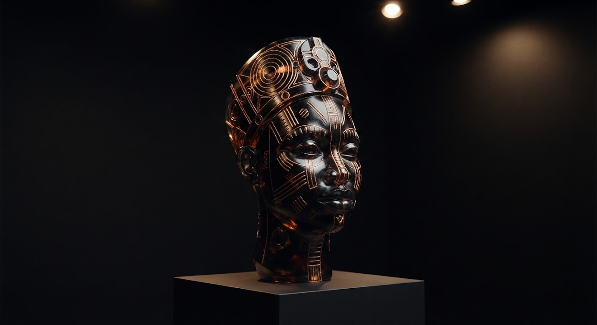
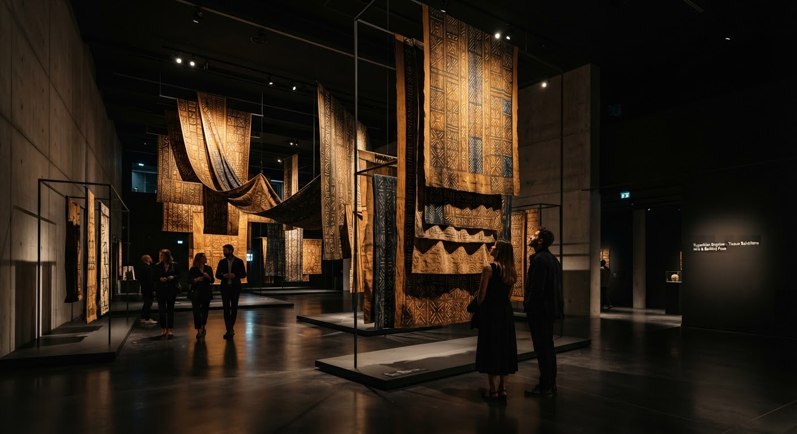
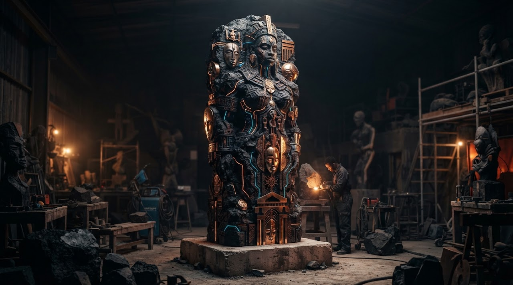
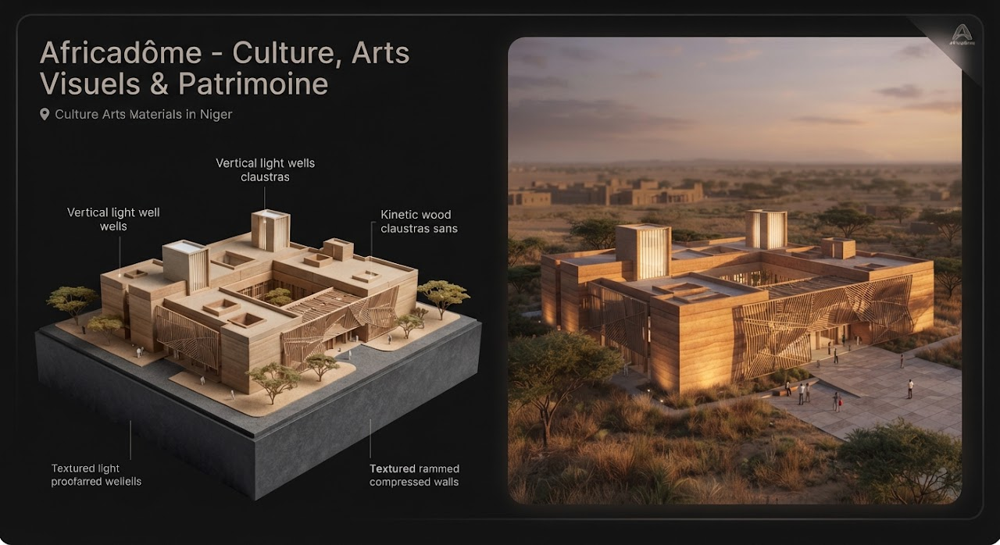
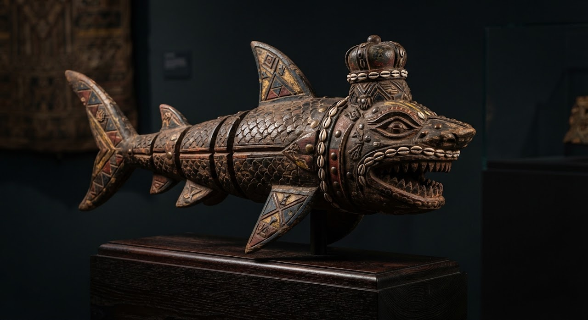
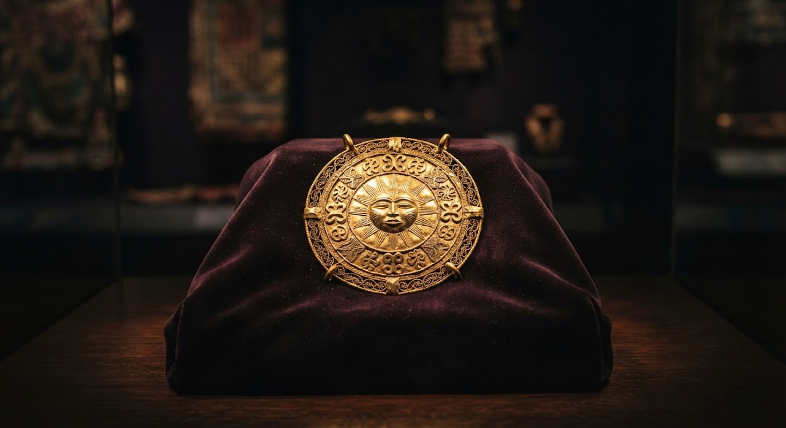
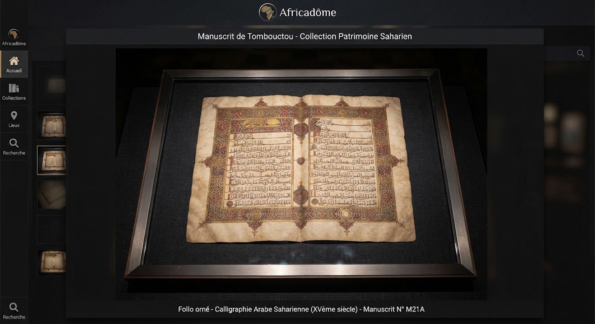

Sculpture numériqueMémoires de bronze : les têtes d'Ifé réinterprétées en impression 3D et résine
Une relecture contemporaine des chefs-d'œuvre d'Ifé, mêlant alliages anciens et polymères.
Du patrimoine restitué aux avant-gardes de l'art contemporain, du design bioclimatique à la haute couture sahélienne.

Une immersion au croisement des géométries maliennes, des teintures à la boue fermentée et des biomatériaux tissés en haute couture par les créateurs de Bamako et d'Abidjan.

Sculpture numériqueUne relecture contemporaine des chefs-d'œuvre d'Ifé, mêlant alliages anciens et polymères.
 Photographie d'art
Photographie d'artUne documentation photographique au moyen format des savoir-faire de teinture végétale.

Art monumentalLes roches volcaniques de la région de Goma façonnées en totems explorant la résilience congolaise.

Design & espaceRepenser la climatisation passive des constructions soudano-sahéliennes à l'échelle de la ville.
 Peinture & textile
Peinture & textileDes toiles qui deviennent étoffes, fruit d'une résidence croisée entre peintres et stylistes.
Aucune collection dans cette catégorie pour le moment.
Volumes des ventes par grande place du continent et analyse de la valeur patrimoniale face à la spéculation internationale.
Progression des ventes conclues sur le continent, en monnaies locales et devises.
Indice calculé selon la présence en institutions et l'évolution de la cote en galerie.
« Le défi des dix prochaines années n'est plus la visibilité de l'art africain à Londres ou New York, mais la constitution de fondations, de réserves muséales et de cercles de mécènes sur le continent. »
Suivi des œuvres restituées ou prêtées aux pays d'origine et des grands projets de numérisation du patrimoine africain.

Image d'illustration26 œuvres du royaume de Dahomey, dont des statues royales, restituées par la France au Bénin en novembre 2021.

Image d'illustration32 objets d'orfèvrerie asante prêtés en 2024 par des musées britanniques au musée du palais de Manhyia, pour le jubilé d'argent de l'Asantehene.

Image d'illustrationDes projets de numérisation rendent accessibles en ligne une partie de ces manuscrits, témoins de siècles de savoirs en sciences, droit et religion.
Pour les directeurs d'institutions, commissaires d'exposition, architectes et collectionneurs passionnés par les scènes visuelles d'Afrique et de ses diasporas.